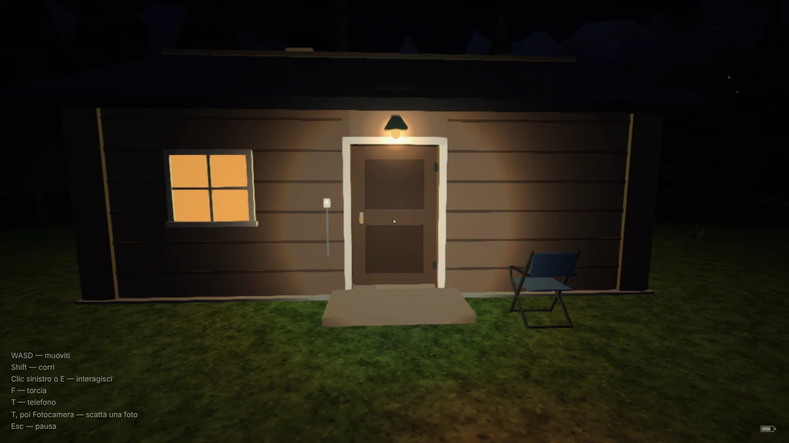
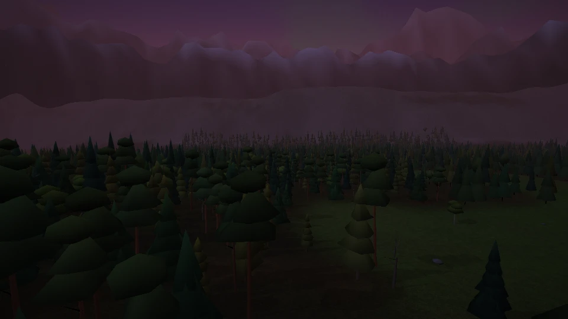
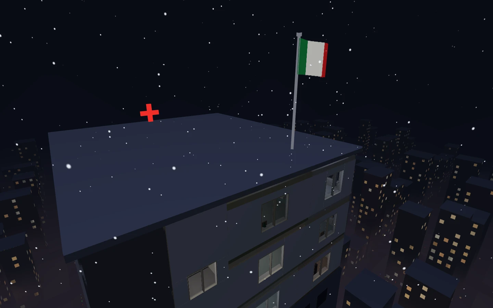

01 / BOSCOHORROR · ESPLORAZIONE
The Dark Seed

Il bosco è il tuo posto di lavoro.
La torcia illumina solo un pezzo di notte.

SEEDXY / HORROR PROCEDURALEDUE GIOCHI HORROR. NEL TUO BROWSER.
2 giochi horror per browser.
Ogni notte nasce da un seed. Il resto lo decidi tu.
Due luoghi in cui restare svegli.
Entra senza sapere cosa ti aspetta.

Il bosco è il tuo posto di lavoro.
La torcia illumina solo un pezzo di notte.

Un turno in ospedale, fino al mattino.
Dietro ogni porta, qualcuno conta su di te.
Cambia il punto di partenza.
Poi segui il tuo istinto.
IL LABORATORIO DEI SEMI
Un numero dà forma alla notte.
Le tue scelte le danno una direzione.
Mescola due impulsi. I semi cambiano colore e il loro incrocio genera un codice per la tua prossima partita.
Ascolta × Aspetta. Un nuovo punto di partenza.